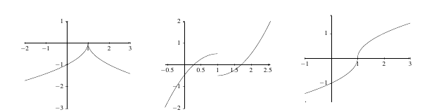
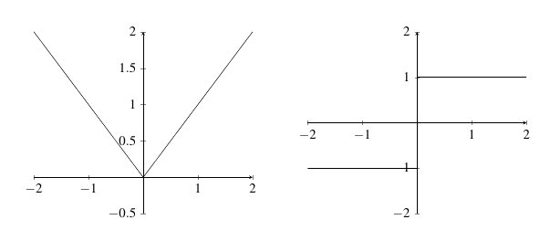

2.8 The Derivative as a Function
Differentiability
Not all functions have derivatives. While most of the functions we have dealt with have had derivatives, it is certainly not the case that they all do. Any function that has a derivative is called .
Definition: A function \(f\) is called differentiable at \(x = a\) if \(f^{\prime}(a)\) exist. A function \(f\) is called differentiable on an interval if the derivative exists for each point in that interval.
Specifically, a function can fail to be differentiable at a point \(a\) if there is a vertical tangent line, a discontinuity in the graph or if the graph has a corner.
|  |
|---|
Example: Determine \(f^{\prime}(0)\) given \(g(x) = |x|\).\
Solution: We know \[\begin{align*} f^{\prime}(0) &= \lim_{h \rightarrow 0} \dfrac{f(0+h) - f(0)}{h}\\ \\ &= \lim_{h \rightarrow 0} \dfrac{|0+h| - |0|}{h}\\ \\ &= \lim_{h \rightarrow 0} \dfrac{|h|}{h}. \end{align*}\] Recall that \[|h| = \begin{cases}h & h \geq 0\\ -h & h < 0 \end{cases}.\] If we take the limit from the left, \(h < 0\). Therefore, \[\lim_{h \rightarrow 0^-} \dfrac{|h|}{h} = \lim_{h \rightarrow 0^{-}} \dfrac{-h}{h} = -1.\] If we take the limit from the right, \(h > 0\). Therefore, \[\lim_{h \rightarrow 0^+} \dfrac{|h|}{h} = \lim_{h \rightarrow 0^{+}} \dfrac{h}{h} = 1.\] Now, since the two one-sided limits are different so \(\displaystyle\lim_{h \rightarrow 0} \dfrac{|h|}{h}\) does not exist. Since the limit does not exist, neither does the derivative.
|  |
|---|
Practice Problems
- Determine where the following functions are differentiable.
- \(f(x) = \begin{cases} x+1 & x \geq 0 \\ x-1 & x < 0 \end{cases}\)
- \(f(x) = |x-1|\)
- \(f(x) = \begin{cases} x^2 & x \geq 0 \\ -x& x < 0 \end{cases}\)
- \(f(x) = \dfrac{1}{x^2}\)
- \(f(x) = x^{1/3}\)
- \(f(x) = \dfrac{x}{|x|}\)
- \(f(x) = \sqrt{x}\)
- \(f(x) = \sqrt{x}\)
- For each of the functions in part A, sketch a graph of the derivatives.